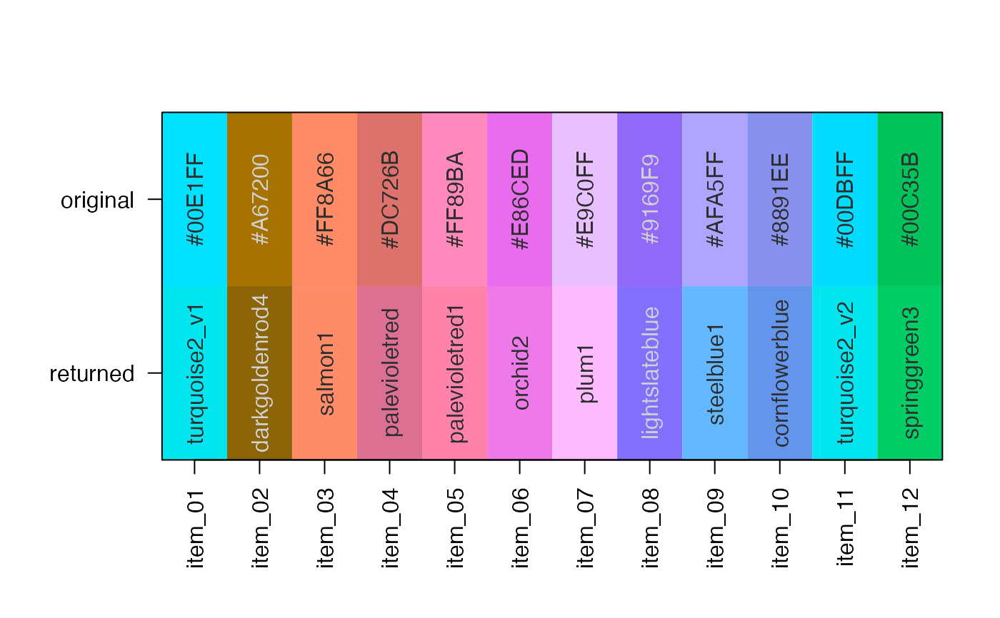

Find the closest R color for a vector of colors
character vector of colors, either in hex format or any valid color in R.
character vector of colors, by default includes
the R colors grDevices::colors().
numeric minimum color Chroma filter applied to
handle greyscale colors. In most practical cases C_min and Cgrey
should be the same value. Note Cgrey is used as an option in
jamba::make_styles(), jamba::applyCLrange() for similar
use cases, so it is used here as well: getOption("jamba.Cgrey", 5).
C_min is applied to colorSet to require the closest matching
color to have at least this color Chroma (saturation).
Cgrey is applied to x to determine if the input color itself
is considered greyscale, in which case it should not be matched
with saturated colors since there is no reliable color hue.
Instead, the subset of colorSet with Chroma below C_min is used
for color-matching.
Reworded in short:
Colors in x with Chroma above Cgrey are matched with
colors in colorSet with Chroma above C_min.
Colors in x with Chroma below Cgrey are matched with
colors in colorSet with Chroma below C_min.
The end result should be that saturated input colors match saturated reference colors, and unsaturated input colors match unsaturated reference colors.
numeric color Chroma at or below which the input color x
is considered to be "grey" (or "gray"), and therefore the color
hue is no longer matched.
logical indicating whether to display the input
colors and resulting closest matching colors by using
jamba::showColors().
character color model to use:
"hcl": default, uses HCL provided by jamba::col2hcl() which
uses the equivalent of colorspace::polarLUV() and considers
color hues in terms of 360 degree angles along a color wheel.
"LUV": uses CIELUV color space, provided by colorspace::LUV()
which encodes the angular color hue in 3-D Cartesian space,
allowing comparisons using Euclidean distance.
numeric relative weights for each dimension of
HCL colors, for the H, C, and L channels, respectively.
logical indicating whether to perform the hue warp
operation using h2hw() which improves the ability to match
colors between orange and green.
character string to define the color wheel used
when matching input colors x to colors in colorSet.
This preset is used with h2hw() and hw2h().
The default preset="ryb" allows greatest distinction in colors
without imposing additional restrictions such as by preset="dichromat"
which would only match color-safe colors. The purpose here is
to identify and label colors based upon a reference set of colors.
character string passed to stats::dist(). The default
method="maximum" works well for colorModel="hcl", and
assigns distance using the largest distance across
the three color coordinates H, C, and L. It requires the best
overall match across all three coordinates rather than any weighted
combination of coordinate distances. Other methods in testing allowed
matches of different color hues when luminance and chroma values
were very similar.
With colorModel="LUV" we recommend using method="euclidean",
which seems to work well with projected color coordinates
L, U, and V. The U, and V coordinates are roughly the angular
color hue projected into a flat plane, the L describing Luminance.
character type of data to return:
"color" returns the color values in colorSet, which by default
are color names from grDevices::colors()
"name" returns names(colorSet) if they exist, otherwise
values from colorSet
"match" returns an integer vector as an index to colorSet
logical whether to print verbose output.
character vector of colors, optionally customized
by argument returnType.
This function is intended as a relatively efficient method to compare
a set of colors to the named R colors provided by grDevices::colors().
Color matching provides substantial improvements over similar functions from other R packages. Notably, colors are matched using either HCL or LUB color model by default, both of which provide vast improvement over RGB color matching, due to better spacing of colors, and increased resolution of color hue.
For colorModel="HCL" the coordinates are weighted to prioritize
matching color Hue above Chroma and Luminance. The distance method
by default uses method="maximum" which also emphasizes the lowest
distance in any of the three dimensions.
Other colorjam core:
blend_colors(),
closest_named_color(),
color_complement(),
colors_to_df(),
group2colors(),
rainbowJam(),
sort_colors(),
subset_colors()
closestRcolor(rainbowJam(12), showPalette=TRUE);

#> #F7C53E #C35E00 #FF8A66 #DC726B
#> "gold2" "chocolate3" "salmon1" "palevioletred"
#> #FF89BA #E86CED #E9C0FF #9169F9
#> "palevioletred1" "orchid2" "plum1" "lightslateblue"
#> #AFA5FF #8891EE #95C3FF #43AAFF
#> "steelblue1" "cornflowerblue" "skyblue1" "steelblue2"